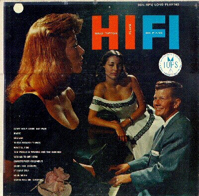

|
Billy Tipton Imagine the coroner's surprise in 1989 when the cadaver he was doing a routine job with, jazz musician and entertainment agent Billy Tipton, turned out to be... a woman. So came down the curtain on a brilliant deception spanning over fifty years, when an aspiring young lady named Dorothy Tipton decided to remake herself over as a man, and lived that way for the rest of her life.At the age of 19 in 1933, Dorothy (who had already taken to calling herself "Tippy" in high school) obtained legal documents listing her as a man and began dressing in traditional "male" clothes and calling herself "Billy". Friends knew this, and it was no big deal, even as Billy went on to marry the first of five wives. Playing in Jazz clubs throughout Kansas City and then other parts of the country, Tipton built a small name as an accomplished performer and writer. Several opportunities arose over her life to take the lead position in several clubs, but she turned them down, possibly to avoid publicity. In fact, nearly all of Tipton's moves are fascinating in the pure mechanics of the fraud, with the different parts of her life clicking into place like an Agatha Christie mystery novel, all clear in restrospect. Her marriages were common law, her three sons adopted. Four of the five wives had no idea they'd married a woman; Billy claimed a medical condition required the wearing of a truss that concealed the truth from them. As time went on, this process must have gotten easier and easier, until it was effortless. After playing Jazz for nearly fifty years, Billy moved into agency, representing clients in Spokane, Washington, although the practice naturally declined as well. This is not to say that Tipton's life was a complete and utter success; no life is. She ended every marriage she got into, had a habit of occasionally being absent as a father and spouse, and the necessary aspects of maintaining her male status made some parts of life very difficult indeed. Most problematic was a refusal to take Social Security or Medicare towards the end of her life, accelerating health problems more than they might otherwise have; and we can only imagine how many doctor's visits she avoided which might have made a cold or other illness less prolonged. Billy's need to avoid the spotlight means that ironically her place in Jazz, the very music she made all these difficult choices to be able to follow, was destined to be minor, at best. But all told, this is less a "hoax" than someone who made a decision early on how they wanted to live, and held to that choice for the rest of their life. The fact that it required a decades-long dance of carefully chosen words and subtle glances just makes it fascinating for the rest of us. Rest well, Dot! |